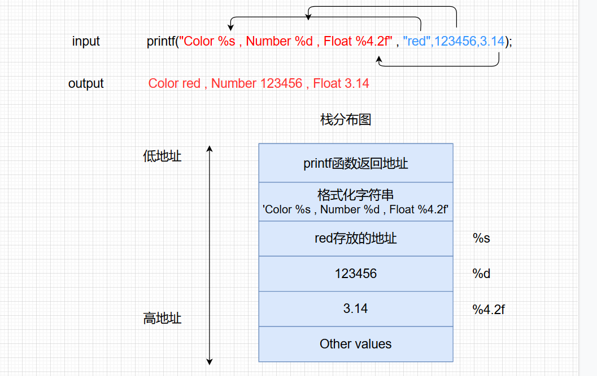
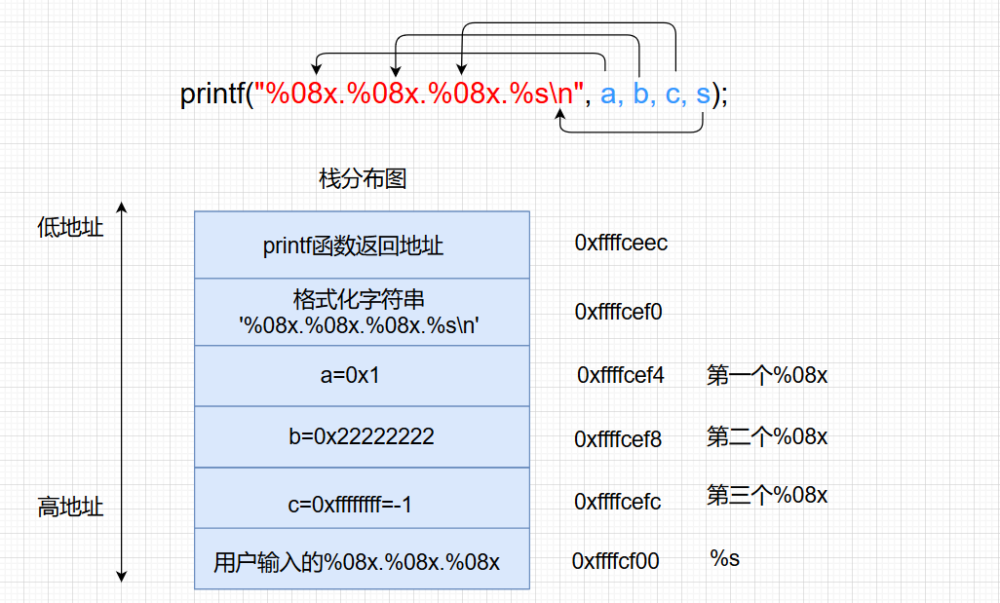
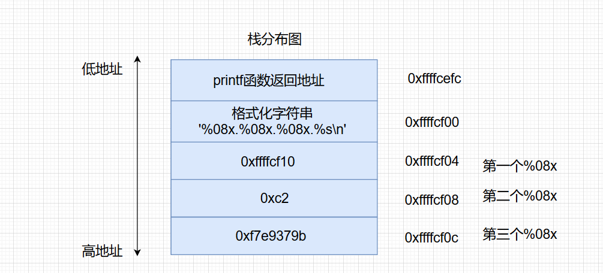

格式化字符串函数
格式化字符串
格式化字符串函数可以接受可变数量的参数，并将第一个参数作为格式化字符串，根据其来解析之后的参数。一般来说，格式化字符串在利用的时候主要分为三个部分
- 格式化字符串函数
- 格式化字符串
- 后续参数（可选）
常见输出格式化字符串：
| 函数 | 功能 |
|---|---|
| printf | 输出到stdout |
| fprintf | 输出到指定FILE流 |
| vprintf | 根据参数列表格式化输出到 stdout |
| vfprintf | 根据参数列表格式化输出到指定FILE流 |
| sprintf | 输出到字符串 |
| snprintf | 输出指定字节数到字符串 |
| vsprintf | 根据参数列表格式化输出到字符串 |
| vsnprintf | 根据参数列表格式化输出指定字节到字符串 |
| setproctitle | 设置argv |
| syslog | 输出日志 |
格式化字符串的结构如下
1 | %[parameter][flags][field width][.precision][length]type |
- parameter：n$，获取格式化字符串中的指定参数
- flag
- field width：输出的最小宽度
- precision：输出的最大长度
- length，输出的长度
- hh，输出一个字节
- h，输出一个双字节
- type
- d/i 以十进制形式输出带符号整数
- u 以十进制形式输出无符号整数
- x/X 以十六进制形式输出无符号整数，x使用小写字母；X使用大写字母
- o 以八进制形式输出无符号整数
- s 输出字符串
- c 单个字符
- p 指针
- n 输出成功的字符个数写入对应的整型指针参数所指的变量。
- % 字符”%”
格式化字符串漏洞原理
格式化字符串函数根据格式化字符串来进行解析。正常的printf函数是被解析的参数个数要和格式化字符串一一对应，这样就可以正常输出。
在进入printf之后，函数首先获取第一个参数，一个一个读取其字符会遇到两种情况
- 当前字符不是%，直接输出到相应标准输出。
- 当前字符是%， 继续读取下一个字符
- 如果没有字符，报错
- 如果下一个字符是%,输出%
- 否则根据相应的字符，获取相应的参数，对其进行解析并输出

但是如果在编写程序的时候，没有提供被解析的参数，程序会怎么样？
1 | printf("Color %s, Number %d, Float %4.2f"); |
当printf函数没有提供任何参数，程序依旧会执行，它会将栈上存储格式化字符串地址上面的三个变量分别解析为
- 解析其地址对应的字符串
- 解析其内容对应的整形值
- 解析其内容对应的浮点值
对于第一种情况来说，如果提供了一个不可访问地址，比如0，那么程序就会因此而崩溃。
格式化字符串漏洞利用
程序崩溃
通常来说，利用格式化字符串漏洞使得程序崩溃是最为简单的利用方式，只需要输入若干个%s即可
1 | %s%s%s%s%s%s%s%s%s%s%s%s%s%s |
因为栈上不可能每个值都对应了合法的地址，所以总是会有某个地址可以使得程序崩溃。如果远程服务有一个格式化字符串漏洞，那么我们就可以攻击其可用性，使服务崩溃，进而使得用户不能够访问。
泄露内存
泄露栈内存
例如
1 |
|
编译
1 | gcc -m32 -fno-stack-protector -no-pie -o leakmemory leakmemory.c |
通过gdb来调试程序，在第一个printf处下断点
1 | pwndbg> b printf |
运行程序，输入%08x.%08x.%08x
1 | pwndbg> r |
查看栈空间
1 | pwndbg> stack 10 |

可以看到第一个%08x解析的是a的值0x1，第二个%08x解析的是b的值0x22222222，第三个%08x解析的是c的值0xffffffff即-1，后面的%s解析的是我们输入的值即%08x.%08x.%08x
通过gdb的c命令继续执行程序，可以验证和我们猜想的结果一样
1 | pwndbg> c |
现在程序断在了第二个printf函数处，看一下此时的栈空间
1 | pwndbg> stack 10 |
因为第二个printf函数没有参数，导致了格式化字符串漏洞，%08x.%08x.%08x会解析栈上的地址。第一个%08x解析的是0xffffcf10，第二个%08x解析的是0xc2，第三个%08x解析的是0xf7e9379b

通过gdb验证，证明和猜想的一样
1 | pwndbg> c |
这里需要注意的是，并不是每次得到的结果都一样 ，因为栈上的数据会因为每次分配的内存页不同而有所不同，这是因为栈是不对内存页做初始化的。
上面都是依次获得栈中的每个参数，那有没有可能直接获取栈上参数的值呢？我们可以通过%n$x来获取栈上第n+1个参数的值。为什么是n+1参数的值，因为格式化参数里面的n指的是该格式化字符串对应的第n个输出参数。而格式化字符串本身就是printf函数的一个参数，所以相对于输出函数printf来说，就是第n+1个参数了。
用gdb调试程序，输入%3$x
1 | gdb-peda$ b printf |
可以看到%3$x打印出来了printf的第四个参数的值
1 | gdb-peda$ c |
获取栈变量对应字符串
只需要将%n$x改成%n$s就可以获取在栈上对应的字符串，步骤和上面泄露内存地址一样。但是需要注意并不是所有的地址都可以被解析成字符串，如果不能解析成字符串，那么程序就会崩溃
技巧小总结
- 利用%x来获取对应栈的内存，但建议使用%p，可以不用考虑位数的区别。
- 利用%s来获取变量所对应地址的内容，只不过有零截断。
- 利用%order$x来获取指定参数的值，利用%order$s来获取指定参数对应地址的内容。
泄露任意地址内存
如果可以泄露某个libc函数中的got表地址，那么就可以获取libc版本和取其他函数的地址。那要如何才可以泄露某个地址的内存？
一般来说，在格式化字符串漏洞中，我们所读取的格式化字符串都是在栈上的，在调用输出函数的时候，第一个参数的值其实就是该格式化字符串的地址。由于我们可以控制该格式化字符串，如果我们知道该格式化字符串在输出函数调用时是第几个参数，这里假设该格式化字符串相对函数调用为第k个参数。那我们就可以通过如下的方式来获取某个指定地址addr的内容。
1 | addr%k$s |
如何确定该格式化字符串为第几个参数，我们可以通过下面这种方式来确定。
1 | [tag]%p%p%p%p%p%p |
一般来说，我们会重复某个字符的机器字长来作为tag，而后面会跟上若干个%p来输出栈上的内容，如果内容与我们前面的tag重复了，那么我们就可以有很大把握说明该地址就是格式化字符串的地址。
1 | gnq@gnq:~/test$ ./leakmemory |
可以看到0x61616161是输出函数的第五个参数，也就是格式化字符串的第四个参数。
如果此时把aaaa替换成某个函数的got表地址，那么程序就会打印出这个函数的真实地址。以scanf函数为例，获取scanf_got的值
1 | from pwn import * |
覆盖内存
只要变量对应的地址可写，我们就可以利用格式化字符串来修改其对应的数值。这里需要用到%n这个特殊的参数类型。之前提到%n可以将输出成功的字符个数写入对应的整型指针参数所指的变量。
一般来说，如下步骤
- 确定覆盖地址
- 确定相对偏移
- 进行覆盖
以下面为例
1 |
|
编译
1 | gcc -m32 -fno-stack-protector -no-pie -o overwrite overwrite.c |
覆盖栈内存
需要将局部变量c的值修改成16，程序已经给了变量c的地址，下一步就是获取相对偏移
1 | gnq@gnq:~/test$ ./overwrite |
通过测试，可以知道变量c在格式化字符串的第六个参数。现在就可以通过%n来构造payload
1 | c_addr + %012d + %6$n |
因为c_addr已经占了4个字节，还需要补充12个字节才到16字节，再通过%6$n将变量c修改成16
1 | from pwn import * |
覆盖任意地址内存
覆盖小数字
需要将变量a的值覆盖成2，如果我们还是将要覆盖的地址放在最前面，那么将直接占用机器字长个(4或8)字节。显然，无论之后如何输出，都只会比2大。仔细想一下，有必要将所要覆盖的变量的地址放在字符串的最前面么？只要把地址放在中间，只要能够找到对应的偏移，其照样也可以得到对应的数值。
我们可以将payload修改一下，前面两个aa是让变量a赋值为2，而最后的xx作为补位（32位字长位4），这样第六位参数就为aa%k，第七位参数为$nxx，a_addr为第八位参数，所以这里的k为8。
1 | 'aa%k' + '$nxx' + p32(a_addr) |
通过IDA找到a的地址
1 | .data:0804A024 public a |
最终利用代码如下
1 | from pwn import * |
覆盖大数字
需要将变量b的值覆盖成0x12345678，如果直接一次性输入那么大的数字来覆盖，可能会因为传送的数值过大，导致失败，就算传送成功，那么大的值也可能导致程序崩溃。那么有没有办法可以覆盖呢？
我们知道x86和x64的体系结构中，变量的存储格式为以小端存储，即最低有效位存储在低地址。举个例子，0x12345678在内存中由低地址到高地址依次为\x78\x56\x34\x12。而格式化字符串中有两个标志位
- hh 对于整数类型，printf期待一个从char提升的int尺寸的整型参数。
- h 对于整数类型，printf期待一个从short提升的int尺寸的整型参数。
这就意味着我们可以利用%hhn向某个地址写入单字节，利用%hn向某个地址写入双字节
变量b的地址为0x0804A028，那么就可以按照单字节写入的方式进行覆盖
1 | 0x0804A028 \x78 |
如果把b_addr放到格式化字符串的第六个参数位，然后通过%6$n将0x78写入，以此类推，将b_addr+1的地址放到第七位，用%7$n写入0x56，b_addr+2的地址放到第八位，用%8$n写入0x34，最后b_addr+3的地址放入第九位参数位，用%9$n写入0x12。就可以成功覆盖变量b为0x12345678
对应的payload
1 | p32(b_addr)+p32(b_addr+1)+p32(b_addr+2)+p32(b_addr+3)+pad1+'%6$n'+pad2+'%7$n'+pad3+'%8$n'+pad4+'%9$n' |
pad1：因为前面四个地址已经占了16（0x10）字节了，所以还需要104（0x78-0x10=0x68）个字节，所以pad1为%104c
pad2：前面已经输出了120个字节，而%hhn写入的是单字节，只取后面的0x56，所以还需要222（0x156-0x78）个字节，所以pad2为%222c
pad3：前面已经输出了342（120+222）个字节，因为同样是%hhn为单字节，只取0x34，还需要222（0x234-0x156）字节，所以pad3为%222c
pad4：前面已经输出了564（120+222+222）个字节，还需要222（0x312-0x234）个字节。所以pad4为%222c
最终利用代码如下
1 | from pwn import * |
或者使用pwntools自带的模块